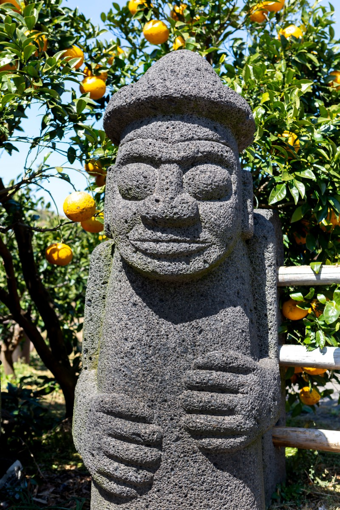
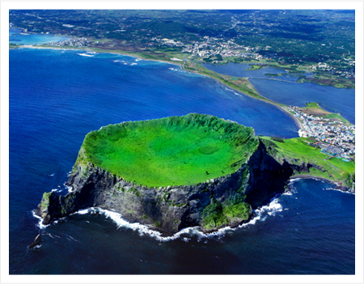
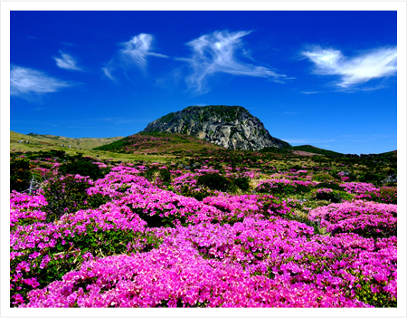

돌하르방은 제주도 특유의 석상이다. 현무암을 깎아서 만들어지는데, 크기는 130cm ~ 190cm정도이다.

성산일출봉은 제주특별자치도 서귀포시 성산읍 성산리에 있는 산이다. 커다란 사발 모양의 분화구가 특징으로, 분화구 내부의 면적은 129,774m²이다. 높이는 182m이다.

제주 김녕굴과 만장굴은 제주특별자치도 제주시 구좌읍에 있는 용암 동굴이다. 1962년 12월 7일 대한민국의 천연기념물 제98호로 지정되었다.

한라산은 대한민국 제주도 중앙부에 있는 해발 1,947.06m, 면적 약 1,820km²의 화산으로, 제주도의 면적 대부분을 차지하고 있다.
